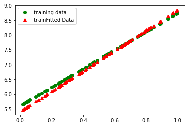

Epoch: 1510 cost= 0.032379210 W= 3.4199822 b= 5.3055577
Epoch: 1511 cost= 0.032263413 W= 3.4200878 b= 5.305882
Epoch: 1512 cost= 0.032148216 W= 3.4201932 b= 5.3062053
Epoch: 1513 cost= 0.032033645 W= 3.4202983 b= 5.3065276
Epoch: 1514 cost= 0.031919643 W= 3.4204035 b= 5.306849
Epoch: 1515 cost= 0.031806126 W= 3.4205081 b= 5.30717
Epoch: 1516 cost= 0.031693343 W= 3.4206128 b= 5.3074894
Epoch: 1517 cost= 0.031581007 W= 3.4207172 b= 5.3078084
Epoch: 1518 cost= 0.031469300 W= 3.4208212 b= 5.3081264
Epoch: 1519 cost= 0.031358197 W= 3.420925 b= 5.3084435
Epoch: 1520 cost= 0.031247383 W= 3.4210284 b= 5.3087606
Epoch: 1521 cost= 0.031136861 W= 3.4211316 b= 5.3090777
Epoch: 1522 cost= 0.031026615 W= 3.4212348 b= 5.309395
Epoch: 1523 cost= 0.030916976 W= 3.4213376 b= 5.309711
Epoch: 1524 cost= 0.030807966 W= 3.42144 b= 5.310026
Epoch: 1525 cost= 0.030699564 W= 3.4215417 b= 5.3103404
Epoch: 1526 cost= 0.030591570 W= 3.4216435 b= 5.310654
Epoch: 1527 cost= 0.030484417 W= 3.4217453 b= 5.310966
Epoch: 1528 cost= 0.030378010 W= 3.4218469 b= 5.3112764
Epoch: 1529 cost= 0.030272160 W= 3.4219484 b= 5.311586
Epoch: 1530 cost= 0.030166738 W= 3.4220498 b= 5.311895
Epoch: 1531 cost= 0.030061722 W= 3.4221509 b= 5.3122034
Epoch: 1532 cost= 0.029957596 W= 3.4222517 b= 5.31251
Epoch: 1533 cost= 0.029853906 W= 3.422352 b= 5.312816
Epoch: 1534 cost= 0.029750770 W= 3.4224522 b= 5.3131213
Epoch: 1535 cost= 0.029648084 W= 3.422552 b= 5.313426
Epoch: 1536 cost= 0.029546533 W= 3.4226515 b= 5.313728
Epoch: 1537 cost= 0.029445443 W= 3.4227505 b= 5.314029
Epoch: 1538 cost= 0.029344741 W= 3.4228492 b= 5.31433
Epoch: 1539 cost= 0.029244635 W= 3.4229474 b= 5.31463
Epoch: 1540 cost= 0.029145138 W= 3.4230447 b= 5.314929
Epoch: 1541 cost= 0.029046362 W= 3.4231415 b= 5.3152266
Epoch: 1542 cost= 0.028947894 W= 3.4232376 b= 5.315524
Epoch: 1543 cost= 0.028850015 W= 3.423333 b= 5.3158207
Epoch: 1544 cost= 0.028752560 W= 3.4234278 b= 5.316117
Epoch: 1545 cost= 0.028655682 W= 3.4235222 b= 5.316412
Epoch: 1546 cost= 0.028559446 W= 3.4236164 b= 5.3167057
Epoch: 1547 cost= 0.028463615 W= 3.4237106 b= 5.316999
Epoch: 1548 cost= 0.028368017 W= 3.4238045 b= 5.317292
Epoch: 1549 cost= 0.028272722 W= 3.423898 b= 5.3175855
Epoch: 1550 cost= 0.028178044 W= 3.4239914 b= 5.3178773
Epoch: 1551 cost= 0.028083934 W= 3.4240844 b= 5.318168
Epoch: 1552 cost= 0.027990196 W= 3.4241774 b= 5.3184586
Epoch: 1553 cost= 0.027896833 W= 3.4242702 b= 5.3187485
Epoch: 1554 cost= 0.027803876 W= 3.4243624 b= 5.319038
Epoch: 1555 cost= 0.027711455 W= 3.4244545 b= 5.3193264
Epoch: 1556 cost= 0.027619381 W= 3.4245465 b= 5.3196144
Epoch: 1557 cost= 0.027527561 W= 3.4246383 b= 5.3199024
Epoch: 1558 cost= 0.027436268 W= 3.4247296 b= 5.3201895
Epoch: 1559 cost= 0.027345339 W= 3.424821 b= 5.320476
Epoch: 1560 cost= 0.027254790 W= 3.424912 b= 5.320762
Epoch: 1561 cost= 0.027164614 W= 3.4250028 b= 5.321048
Epoch: 1562 cost= 0.027074790 W= 3.4250937 b= 5.321333
Epoch: 1563 cost= 0.026985468 W= 3.4251845 b= 5.321617
Epoch: 1564 cost= 0.026896456 W= 3.4252741 b= 5.3219013
Epoch: 1565 cost= 0.026807660 W= 3.4253638 b= 5.3221855
Epoch: 1566 cost= 0.026719267 W= 3.425453 b= 5.322469
Epoch: 1567 cost= 0.026631078 W= 3.425542 b= 5.322753
Epoch: 1568 cost= 0.026543271 W= 3.4256308 b= 5.323036
Epoch: 1569 cost= 0.026455760 W= 3.4257188 b= 5.3233194
Epoch: 1570 cost= 0.026368447 W= 3.4258068 b= 5.3236027
Epoch: 1571 cost= 0.026281506 W= 3.4258945 b= 5.3238854
Epoch: 1572 cost= 0.026194818 W= 3.4259818 b= 5.324168
Epoch: 1573 cost= 0.026108515 W= 3.4260685 b= 5.3244505
Epoch: 1574 cost= 0.026022609 W= 3.4261546 b= 5.3247323
Epoch: 1575 cost= 0.025937119 W= 3.42624 b= 5.3250136
Epoch: 1576 cost= 0.025851998 W= 3.4263248 b= 5.3252945
Epoch: 1577 cost= 0.025767535 W= 3.4264092 b= 5.325574
Epoch: 1578 cost= 0.025683448 W= 3.4264932 b= 5.325853
Epoch: 1579 cost= 0.025599781 W= 3.426576 b= 5.3261313
Epoch: 1580 cost= 0.025517134 W= 3.4266584 b= 5.326407
Epoch: 1581 cost= 0.025434937 W= 3.426741 b= 5.3266816
Epoch: 1582 cost= 0.025353100 W= 3.4268231 b= 5.326956
Epoch: 1583 cost= 0.025271477 W= 3.4269052 b= 5.32723
Epoch: 1584 cost= 0.025190448 W= 3.426987 b= 5.3275027
Epoch: 1585 cost= 0.025109915 W= 3.4270685 b= 5.3277745
Epoch: 1586 cost= 0.025029592 W= 3.4271498 b= 5.3280463
Epoch: 1587 cost= 0.024949852 W= 3.4272308 b= 5.3283167
Epoch: 1588 cost= 0.024870357 W= 3.4273114 b= 5.328587
Epoch: 1589 cost= 0.024791317 W= 3.4273918 b= 5.3288565
Epoch: 1590 cost= 0.024712626 W= 3.4274719 b= 5.3291254
Epoch: 1591 cost= 0.024634281 W= 3.4275515 b= 5.329394
Epoch: 1592 cost= 0.024556134 W= 3.4276311 b= 5.3296623
Epoch: 1593 cost= 0.024478296 W= 3.4277108 b= 5.3299303
Epoch: 1594 cost= 0.024400691 W= 3.42779 b= 5.3301983
Epoch: 1595 cost= 0.024323413 W= 3.4278688 b= 5.330466
Epoch: 1596 cost= 0.024246449 W= 3.4279478 b= 5.330733
Epoch: 1597 cost= 0.024169955 W= 3.4280262 b= 5.330999
Epoch: 1598 cost= 0.024093840 W= 3.428104 b= 5.3312645
Epoch: 1599 cost= 0.024018306 W= 3.4281814 b= 5.3315287
Epoch: 1600 cost= 0.023943083 W= 3.4282587 b= 5.3317924
Epoch: 1601 cost= 0.023868203 W= 3.4283354 b= 5.3320556
Epoch: 1602 cost= 0.023793915 W= 3.428412 b= 5.3323174
Epoch: 1603 cost= 0.023720164 W= 3.4284885 b= 5.3325777
Epoch: 1604 cost= 0.023647098 W= 3.4285648 b= 5.332836
Epoch: 1605 cost= 0.023574490 W= 3.4286408 b= 5.3330936
Epoch: 1606 cost= 0.023502044 W= 3.428717 b= 5.333351
Epoch: 1607 cost= 0.023429770 W= 3.428793 b= 5.3336086
Epoch: 1608 cost= 0.023357788 W= 3.428869 b= 5.3338656
Epoch: 1609 cost= 0.023286046 W= 3.4289443 b= 5.3341227
Epoch: 1610 cost= 0.023214603 W= 3.4290195 b= 5.334379
Epoch: 1611 cost= 0.023143725 W= 3.4290943 b= 5.3346343
Epoch: 1612 cost= 0.023073275 W= 3.429169 b= 5.3348885
Epoch: 1613 cost= 0.023003137 W= 3.4292433 b= 5.335142
Epoch: 1614 cost= 0.022933163 W= 3.4293177 b= 5.335396
Epoch: 1615 cost= 0.022863634 W= 3.4293916 b= 5.3356485
Epoch: 1616 cost= 0.022794267 W= 3.4294655 b= 5.3359013
Epoch: 1617 cost= 0.022725428 W= 3.4295394 b= 5.3361526
Epoch: 1618 cost= 0.022656901 W= 3.429613 b= 5.3364034
Epoch: 1619 cost= 0.022588808 W= 3.4296863 b= 5.336653
Epoch: 1620 cost= 0.022520926 W= 3.4297588 b= 5.336903
Epoch: 1621 cost= 0.022453193 W= 3.4298313 b= 5.337153
Epoch: 1622 cost= 0.022385785 W= 3.4299035 b= 5.3374023
Epoch: 1623 cost= 0.022318538 W= 3.4299755 b= 5.3376517
Epoch: 1624 cost= 0.022251844 W= 3.430047 b= 5.3378997
Epoch: 1625 cost= 0.022185354 W= 3.430118 b= 5.3381476
Epoch: 1626 cost= 0.022119481 W= 3.4301891 b= 5.3383937
Epoch: 1627 cost= 0.022053795 W= 3.43026 b= 5.3386397
Epoch: 1628 cost= 0.021988498 W= 3.4303308 b= 5.338885
Epoch: 1629 cost= 0.021923477 W= 3.4304016 b= 5.3391294
Epoch: 1630 cost= 0.021858951 W= 3.4304721 b= 5.3393726
Epoch: 1631 cost= 0.021795003 W= 3.4305422 b= 5.3396144
Epoch: 1632 cost= 0.021731406 W= 3.4306123 b= 5.339855
Epoch: 1633 cost= 0.021668043 W= 3.4306815 b= 5.340096
Epoch: 1634 cost= 0.021604840 W= 3.4307504 b= 5.340337
Epoch: 1635 cost= 0.021541923 W= 3.430819 b= 5.340577
Epoch: 1636 cost= 0.021479156 W= 3.4308877 b= 5.3408175
Epoch: 1637 cost= 0.021416796 W= 3.430956 b= 5.341057
Epoch: 1638 cost= 0.021354610 W= 3.4310238 b= 5.341296
Epoch: 1639 cost= 0.021292679 W= 3.4310918 b= 5.341535
Epoch: 1640 cost= 0.021231171 W= 3.431159 b= 5.341773
Epoch: 1641 cost= 0.021169851 W= 3.4312258 b= 5.342011
Epoch: 1642 cost= 0.021108668 W= 3.4312925 b= 5.342249
Epoch: 1643 cost= 0.021047752 W= 3.431359 b= 5.3424864
Epoch: 1644 cost= 0.020987011 W= 3.4314253 b= 5.342724
Epoch: 1645 cost= 0.020926544 W= 3.4314914 b= 5.342961
Epoch: 1646 cost= 0.020866234 W= 3.4315572 b= 5.343198
Epoch: 1647 cost= 0.020806102 W= 3.4316225 b= 5.343435
Epoch: 1648 cost= 0.020746367 W= 3.4316874 b= 5.343671
Epoch: 1649 cost= 0.020686772 W= 3.4317522 b= 5.343907
Epoch: 1650 cost= 0.020627340 W= 3.4318168 b= 5.344143
Epoch: 1651 cost= 0.020568185 W= 3.431881 b= 5.3443785
Epoch: 1652 cost= 0.020509429 W= 3.4319446 b= 5.344613
Epoch: 1653 cost= 0.020450924 W= 3.4320083 b= 5.344847
Epoch: 1654 cost= 0.020392578 W= 3.4320717 b= 5.3450813
Epoch: 1655 cost= 0.020334603 W= 3.4321349 b= 5.3453145
Epoch: 1656 cost= 0.020277014 W= 3.4321978 b= 5.3455467
Epoch: 1657 cost= 0.020219564 W= 3.4322605 b= 5.345779
Epoch: 1658 cost= 0.020162258 W= 3.4323232 b= 5.346011
Epoch: 1659 cost= 0.020105217 W= 3.4323857 b= 5.346243
Epoch: 1660 cost= 0.020048415 W= 3.4324481 b= 5.346474
Epoch: 1661 cost= 0.019991884 W= 3.4325101 b= 5.346705
Epoch: 1662 cost= 0.019935768 W= 3.4325714 b= 5.346935
Epoch: 1663 cost= 0.019879911 W= 3.4326322 b= 5.347164
Epoch: 1664 cost= 0.019824233 W= 3.4326923 b= 5.3473935
Epoch: 1665 cost= 0.019769132 W= 3.4327521 b= 5.347621
Epoch: 1666 cost= 0.019714439 W= 3.432811 b= 5.3478475
Epoch: 1667 cost= 0.019660108 W= 3.4328694 b= 5.348073
Epoch: 1668 cost= 0.019605946 W= 3.4329274 b= 5.3482985
Epoch: 1669 cost= 0.019552020 W= 3.4329853 b= 5.3485236
Epoch: 1670 cost= 0.019498240 W= 3.433043 b= 5.3487487
Epoch: 1671 cost= 0.019444793 W= 3.4331005 b= 5.348973
Epoch: 1672 cost= 0.019391621 W= 3.4331577 b= 5.3491964
Epoch: 1673 cost= 0.019338734 W= 3.4332137 b= 5.3494196
Epoch: 1674 cost= 0.019286223 W= 3.4332693 b= 5.349642
Epoch: 1675 cost= 0.019233819 W= 3.4333248 b= 5.349864
Epoch: 1676 cost= 0.019181656 W= 3.4333804 b= 5.3500857
Epoch: 1677 cost= 0.019129625 W= 3.4334357 b= 5.3503075
Epoch: 1678 cost= 0.019077927 W= 3.433491 b= 5.3505282
Epoch: 1679 cost= 0.019026466 W= 3.4335463 b= 5.3507485
Epoch: 1680 cost= 0.018975431 W= 3.4336016 b= 5.3509674
Epoch: 1681 cost= 0.018924739 W= 3.4336567 b= 5.3511853
Epoch: 1682 cost= 0.018874394 W= 3.4337115 b= 5.3514023
Epoch: 1683 cost= 0.018824577 W= 3.4337664 b= 5.3516173
Epoch: 1684 cost= 0.018774981 W= 3.433821 b= 5.351832
Epoch: 1685 cost= 0.018725516 W= 3.4338756 b= 5.3520465
Epoch: 1686 cost= 0.018676259 W= 3.4339302 b= 5.3522606
Epoch: 1687 cost= 0.018627141 W= 3.4339845 b= 5.3524747
Epoch: 1688 cost= 0.018578360 W= 3.4340386 b= 5.352688
Epoch: 1689 cost= 0.018529678 W= 3.4340928 b= 5.352901
Epoch: 1690 cost= 0.018481262 W= 3.4341464 b= 5.3531137
Epoch: 1691 cost= 0.018432943 W= 3.4342 b= 5.3533263
Epoch: 1692 cost= 0.018384837 W= 3.4342537 b= 5.3535385
Epoch: 1693 cost= 0.018336950 W= 3.4343073 b= 5.35375
Epoch: 1694 cost= 0.018289182 W= 3.434361 b= 5.353962
Epoch: 1695 cost= 0.018241625 W= 3.4344146 b= 5.354173
Epoch: 1696 cost= 0.018194277 W= 3.4344683 b= 5.354384
Epoch: 1697 cost= 0.018147165 W= 3.4345214 b= 5.354594
Epoch: 1698 cost= 0.018100273 W= 3.4345746 b= 5.354804
Epoch: 1699 cost= 0.018053485 W= 3.4346278 b= 5.355014
Epoch: 1700 cost= 0.018007021 W= 3.4346807 b= 5.3552227
Epoch: 1701 cost= 0.017960791 W= 3.4347332 b= 5.355431
Epoch: 1702 cost= 0.017914765 W= 3.4347856 b= 5.355639
Epoch: 1703 cost= 0.017868964 W= 3.434838 b= 5.3558464
Epoch: 1704 cost= 0.017823279 W= 3.43489 b= 5.356054
Epoch: 1705 cost= 0.017777814 W= 3.434942 b= 5.356261
Epoch: 1706 cost= 0.017732453 W= 3.4349937 b= 5.3564677
Epoch: 1707 cost= 0.017687205 W= 3.4350455 b= 5.3566747
Epoch: 1708 cost= 0.017642310 W= 3.4350965 b= 5.3568807
Epoch: 1709 cost= 0.017597526 W= 3.435147 b= 5.3570867
Epoch: 1710 cost= 0.017552860 W= 3.4351976 b= 5.3572927
Epoch: 1711 cost= 0.017508337 W= 3.4352472 b= 5.3574986
Epoch: 1712 cost= 0.017464036 W= 3.4352965 b= 5.357704
Epoch: 1713 cost= 0.017419945 W= 3.435346 b= 5.357909
Epoch: 1714 cost= 0.017376067 W= 3.4353948 b= 5.358114
Epoch: 1715 cost= 0.017332595 W= 3.4354434 b= 5.358317
Epoch: 1716 cost= 0.017289437 W= 3.4354916 b= 5.358519
Epoch: 1717 cost= 0.017246585 W= 3.4355395 b= 5.3587203
Epoch: 1718 cost= 0.017203854 W= 3.4355872 b= 5.3589215
Epoch: 1719 cost= 0.017161321 W= 3.4356346 b= 5.3591223
Epoch: 1720 cost= 0.017119100 W= 3.4356818 b= 5.359322
Epoch: 1721 cost= 0.017077088 W= 3.4357288 b= 5.3595214
Epoch: 1722 cost= 0.017035257 W= 3.4357755 b= 5.35972
Epoch: 1723 cost= 0.016993742 W= 3.435822 b= 5.359918
Epoch: 1724 cost= 0.016952436 W= 3.4358683 b= 5.3601155
Epoch: 1725 cost= 0.016911220 W= 3.4359145 b= 5.360313
Epoch: 1726 cost= 0.016870281 W= 3.4359608 b= 5.3605094
Epoch: 1727 cost= 0.016829455 W= 3.4360068 b= 5.360706
Epoch: 1728 cost= 0.016788820 W= 3.4360528 b= 5.360902
Epoch: 1729 cost= 0.016748376 W= 3.4360986 b= 5.3610973
Epoch: 1730 cost= 0.016708136 W= 3.436144 b= 5.3612924
Epoch: 1731 cost= 0.016668016 W= 3.4361892 b= 5.3614874
Epoch: 1732 cost= 0.016628005 W= 3.436234 b= 5.3616824
Epoch: 1733 cost= 0.016588259 W= 3.4362788 b= 5.3618765
Epoch: 1734 cost= 0.016548889 W= 3.4363236 b= 5.362069
Epoch: 1735 cost= 0.016509704 W= 3.4363685 b= 5.3622613
Epoch: 1736 cost= 0.016470807 W= 3.436413 b= 5.3624525
Epoch: 1737 cost= 0.016432015 W= 3.4364572 b= 5.3626437
Epoch: 1738 cost= 0.016393330 W= 3.436501 b= 5.362835
Epoch: 1739 cost= 0.016354823 W= 3.436545 b= 5.3630257
Epoch: 1740 cost= 0.016316421 W= 3.4365885 b= 5.3632164
Epoch: 1741 cost= 0.016278103 W= 3.4366322 b= 5.363407
Epoch: 1742 cost= 0.016239868 W= 3.4366758 b= 5.363598
Epoch: 1743 cost= 0.016201781 W= 3.4367185 b= 5.3637886
Epoch: 1744 cost= 0.016163979 W= 3.4367607 b= 5.3639784
Epoch: 1745 cost= 0.016126273 W= 3.4368026 b= 5.364168
Epoch: 1746 cost= 0.016088668 W= 3.4368443 b= 5.364358
Epoch: 1747 cost= 0.016051151 W= 3.4368858 b= 5.3645477
Epoch: 1748 cost= 0.016013730 W= 3.4369273 b= 5.3647375
Epoch: 1749 cost= 0.015976410 W= 3.4369686 b= 5.3649273
Epoch: 1750 cost= 0.015939254 W= 3.4370098 b= 5.3651166
Epoch: 1751 cost= 0.015902562 W= 3.4370508 b= 5.365304
Epoch: 1752 cost= 0.015866132 W= 3.4370918 b= 5.3654904
Epoch: 1753 cost= 0.015829779 W= 3.4371328 b= 5.365677
Epoch: 1754 cost= 0.015793629 W= 3.4371734 b= 5.365863
Epoch: 1755 cost= 0.015757646 W= 3.437214 b= 5.3660483
Epoch: 1756 cost= 0.015721748 W= 3.4372544 b= 5.366234
Epoch: 1757 cost= 0.015685951 W= 3.4372947 b= 5.3664193
Epoch: 1758 cost= 0.015650230 W= 3.437335 b= 5.366605
Epoch: 1759 cost= 0.015614684 W= 3.4373753 b= 5.36679
Epoch: 1760 cost= 0.015579306 W= 3.4374156 b= 5.3669744
Epoch: 1761 cost= 0.015544105 W= 3.4374557 b= 5.3671584
Epoch: 1762 cost= 0.015508993 W= 3.4374957 b= 5.3673425
Epoch: 1763 cost= 0.015473965 W= 3.4375358 b= 5.3675265
Epoch: 1764 cost= 0.015439030 W= 3.4375756 b= 5.3677106
Epoch: 1765 cost= 0.015404451 W= 3.437615 b= 5.367893
Epoch: 1766 cost= 0.015370046 W= 3.437654 b= 5.3680754
Epoch: 1767 cost= 0.015335812 W= 3.4376926 b= 5.368257
Epoch: 1768 cost= 0.015301783 W= 3.437731 b= 5.3684382
Epoch: 1769 cost= 0.015267813 W= 3.4377694 b= 5.3686194
Epoch: 1770 cost= 0.015234024 W= 3.4378073 b= 5.3688
Epoch: 1771 cost= 0.015200351 W= 3.4378445 b= 5.368981
Epoch: 1772 cost= 0.015166841 W= 3.4378817 b= 5.369161
Epoch: 1773 cost= 0.015133495 W= 3.4379187 b= 5.369341
Epoch: 1774 cost= 0.015100244 W= 3.4379554 b= 5.3695207
Epoch: 1775 cost= 0.015067180 W= 3.4379914 b= 5.3697
Epoch: 1776 cost= 0.015034273 W= 3.4380274 b= 5.369879
Epoch: 1777 cost= 0.015001625 W= 3.4380634 b= 5.3700566
Epoch: 1778 cost= 0.014969218 W= 3.4380991 b= 5.3702335
Epoch: 1779 cost= 0.014936965 W= 3.438135 b= 5.37041
Epoch: 1780 cost= 0.014904900 W= 3.43817 b= 5.370586
Epoch: 1781 cost= 0.014872998 W= 3.4382048 b= 5.3707614
Epoch: 1782 cost= 0.014841175 W= 3.4382396 b= 5.370937
Epoch: 1783 cost= 0.014809681 W= 3.4382741 b= 5.371111
Epoch: 1784 cost= 0.014778344 W= 3.4383087 b= 5.3712845
Epoch: 1785 cost= 0.014747160 W= 3.4383433 b= 5.3714576
Epoch: 1786 cost= 0.014716298 W= 3.4383779 b= 5.371629
Epoch: 1787 cost= 0.014685593 W= 3.4384124 b= 5.3718004
Epoch: 1788 cost= 0.014655110 W= 3.438447 b= 5.3719707
Epoch: 1789 cost= 0.014624878 W= 3.438481 b= 5.37214
Epoch: 1790 cost= 0.014594893 W= 3.4385152 b= 5.3723083
Epoch: 1791 cost= 0.014565055 W= 3.438549 b= 5.372476
Epoch: 1792 cost= 0.014535285 W= 3.438583 b= 5.372644
Epoch: 1793 cost= 0.014505593 W= 3.4386165 b= 5.372812
Epoch: 1794 cost= 0.014475978 W= 3.43865 b= 5.3729796
Epoch: 1795 cost= 0.014446587 W= 3.438683 b= 5.3731465
Epoch: 1796 cost= 0.014417383 W= 3.4387157 b= 5.373313
Epoch: 1797 cost= 0.014388304 W= 3.4387484 b= 5.373479
Epoch: 1798 cost= 0.014359313 W= 3.4387808 b= 5.373645
Epoch: 1799 cost= 0.014330402 W= 3.4388125 b= 5.373811
Epoch: 1800 cost= 0.014301643 W= 3.438844 b= 5.373976
Epoch: 1801 cost= 0.014272959 W= 3.4388754 b= 5.3741417
Epoch: 1802 cost= 0.014244343 W= 3.4389067 b= 5.374307
Epoch: 1803 cost= 0.014215874 W= 3.4389377 b= 5.374472
Epoch: 1804 cost= 0.014187480 W= 3.4389682 b= 5.374637
Epoch: 1805 cost= 0.014159239 W= 3.4389987 b= 5.3748016
Epoch: 1806 cost= 0.014131059 W= 3.4390292 b= 5.374966
Epoch: 1807 cost= 0.014102947 W= 3.4390597 b= 5.3751307
Epoch: 1808 cost= 0.014074988 W= 3.4390898 b= 5.3752947
Epoch: 1809 cost= 0.014047104 W= 3.4391193 b= 5.3754587
Epoch: 1810 cost= 0.014019376 W= 3.4391487 b= 5.3756223
Epoch: 1811 cost= 0.013991790 W= 3.4391778 b= 5.3757854
Epoch: 1812 cost= 0.013964284 W= 3.4392066 b= 5.3759484
Epoch: 1813 cost= 0.013936834 W= 3.4392354 b= 5.3761115
Epoch: 1814 cost= 0.013909595 W= 3.4392643 b= 5.3762736
Epoch: 1815 cost= 0.013882546 W= 3.4392917 b= 5.3764353
Epoch: 1816 cost= 0.013855568 W= 3.4393187 b= 5.376597
Epoch: 1817 cost= 0.013828743 W= 3.4393451 b= 5.376758
Epoch: 1818 cost= 0.013801968 W= 3.4393716 b= 5.3769193
Epoch: 1819 cost= 0.013775272 W= 3.439398 b= 5.3770804
Epoch: 1820 cost= 0.013748616 W= 3.4394245 b= 5.3772416
Epoch: 1821 cost= 0.013722124 W= 3.439451 b= 5.3774023
Epoch: 1822 cost= 0.013695675 W= 3.4394772 b= 5.377563
Epoch: 1823 cost= 0.013669367 W= 3.4395034 b= 5.377723
Epoch: 1824 cost= 0.013643130 W= 3.4395294 b= 5.3778834
Epoch: 1825 cost= 0.013616960 W= 3.4395552 b= 5.3780437
Epoch: 1826 cost= 0.013590997 W= 3.4395807 b= 5.378203
Epoch: 1827 cost= 0.013565259 W= 3.4396062 b= 5.378361
Epoch: 1828 cost= 0.013539724 W= 3.4396312 b= 5.3785186
Epoch: 1829 cost= 0.013514260 W= 3.4396563 b= 5.378676
Epoch: 1830 cost= 0.013488857 W= 3.439681 b= 5.3788333
Epoch: 1831 cost= 0.013463524 W= 3.4397054 b= 5.3789907
Epoch: 1832 cost= 0.013438328 W= 3.4397295 b= 5.3791475
Epoch: 1833 cost= 0.013413182 W= 3.4397535 b= 5.3793044
Epoch: 1834 cost= 0.013388190 W= 3.4397771 b= 5.379461
Epoch: 1835 cost= 0.013363252 W= 3.4398007 b= 5.379617
Epoch: 1836 cost= 0.013338367 W= 3.4398243 b= 5.3797736
Epoch: 1837 cost= 0.013313538 W= 3.439848 b= 5.37993
Epoch: 1838 cost= 0.013288771 W= 3.4398715 b= 5.3800864
Epoch: 1839 cost= 0.013264209 W= 3.4398952 b= 5.380242
Epoch: 1840 cost= 0.013239772 W= 3.4399185 b= 5.380397
Epoch: 1841 cost= 0.013215395 W= 3.4399416 b= 5.380552
Epoch: 1842 cost= 0.013191153 W= 3.4399645 b= 5.3807063
Epoch: 1843 cost= 0.013167065 W= 3.4399867 b= 5.3808603
Epoch: 1844 cost= 0.013143104 W= 3.4400086 b= 5.381014
Epoch: 1845 cost= 0.013119197 W= 3.4400306 b= 5.3811674
Epoch: 1846 cost= 0.013095436 W= 3.4400518 b= 5.3813205
Epoch: 1847 cost= 0.013071866 W= 3.440073 b= 5.3814726
Epoch: 1848 cost= 0.013048425 W= 3.4400942 b= 5.381624
Epoch: 1849 cost= 0.013025111 W= 3.4401152 b= 5.3817754
Epoch: 1850 cost= 0.013001860 W= 3.4401362 b= 5.3819265
Epoch: 1851 cost= 0.012978790 W= 3.4401572 b= 5.3820767
Epoch: 1852 cost= 0.012955858 W= 3.440178 b= 5.3822265
Epoch: 1853 cost= 0.012933049 W= 3.4401984 b= 5.3823757
Epoch: 1854 cost= 0.012910290 W= 3.440219 b= 5.382525
Epoch: 1855 cost= 0.012887578 W= 3.4402394 b= 5.382674
Epoch: 1856 cost= 0.012864999 W= 3.4402597 b= 5.382823
Epoch: 1857 cost= 0.012842469 W= 3.44028 b= 5.382972
Epoch: 1858 cost= 0.012820131 W= 3.4403002 b= 5.3831196
Epoch: 1859 cost= 0.012797841 W= 3.4403203 b= 5.3832674
Epoch: 1860 cost= 0.012775613 W= 3.44034 b= 5.383415
Epoch: 1861 cost= 0.012753432 W= 3.4403598 b= 5.383563
Epoch: 1862 cost= 0.012731375 W= 3.4403796 b= 5.3837104
Epoch: 1863 cost= 0.012709366 W= 3.4403994 b= 5.3838577
Epoch: 1864 cost= 0.012687541 W= 3.4404192 b= 5.384004
Epoch: 1865 cost= 0.012665772 W= 3.4404387 b= 5.3841505
Epoch: 1866 cost= 0.012644050 W= 3.4404583 b= 5.384297
Epoch: 1867 cost= 0.012622520 W= 3.4404778 b= 5.3844423
Epoch: 1868 cost= 0.012601108 W= 3.4404972 b= 5.3845873
Epoch: 1869 cost= 0.012579748 W= 3.4405162 b= 5.3847322
Epoch: 1870 cost= 0.012558572 W= 3.4405353 b= 5.3848763
Epoch: 1871 cost= 0.012537458 W= 3.4405541 b= 5.3850203
Epoch: 1872 cost= 0.012516439 W= 3.440573 b= 5.385164
Epoch: 1873 cost= 0.012495481 W= 3.4405916 b= 5.3853073
Epoch: 1874 cost= 0.012474648 W= 3.4406102 b= 5.3854504
Epoch: 1875 cost= 0.012453849 W= 3.4406288 b= 5.3855934
Epoch: 1876 cost= 0.012433176 W= 3.4406471 b= 5.385736
Epoch: 1877 cost= 0.012412610 W= 3.4406652 b= 5.385878
Epoch: 1878 cost= 0.012392172 W= 3.4406831 b= 5.3860197
Epoch: 1879 cost= 0.012371844 W= 3.440701 b= 5.386161
Epoch: 1880 cost= 0.012351628 W= 3.4407187 b= 5.3863015
Epoch: 1881 cost= 0.012331537 W= 3.4407363 b= 5.3864417
Epoch: 1882 cost= 0.012311481 W= 3.4407537 b= 5.386582
Epoch: 1883 cost= 0.012291546 W= 3.440771 b= 5.3867216
Epoch: 1884 cost= 0.012271644 W= 3.4407885 b= 5.3868613
Epoch: 1885 cost= 0.012251787 W= 3.440806 b= 5.387001
Epoch: 1886 cost= 0.012232046 W= 3.4408233 b= 5.3871403
Epoch: 1887 cost= 0.012212342 W= 3.4408407 b= 5.3872795
Epoch: 1888 cost= 0.012192698 W= 3.440858 b= 5.3874187
Epoch: 1889 cost= 0.012173091 W= 3.440875 b= 5.387558
Epoch: 1890 cost= 0.012153529 W= 3.440892 b= 5.387697
Epoch: 1891 cost= 0.012134012 W= 3.440909 b= 5.3878365
Epoch: 1892 cost= 0.012114537 W= 3.4409258 b= 5.3879757
Epoch: 1893 cost= 0.012095112 W= 3.4409425 b= 5.388115
Epoch: 1894 cost= 0.012075790 W= 3.4409592 b= 5.3882537
Epoch: 1895 cost= 0.012056582 W= 3.440976 b= 5.388392
Epoch: 1896 cost= 0.012037422 W= 3.4409926 b= 5.3885303
Epoch: 1897 cost= 0.012018294 W= 3.4410093 b= 5.3886685
Epoch: 1898 cost= 0.011999273 W= 3.441026 b= 5.3888063
Epoch: 1899 cost= 0.011980442 W= 3.4410424 b= 5.388943
Epoch: 1900 cost= 0.011961648 W= 3.4410586 b= 5.38908
Epoch: 1901 cost= 0.011942954 W= 3.4410748 b= 5.3892164
Epoch: 1902 cost= 0.011924315 W= 3.4410908 b= 5.389353
Epoch: 1903 cost= 0.011905708 W= 3.4411066 b= 5.389489
Epoch: 1904 cost= 0.011887221 W= 3.4411223 b= 5.389625
Epoch: 1905 cost= 0.011868834 W= 3.441138 b= 5.3897605
Epoch: 1906 cost= 0.011850486 W= 3.4411538 b= 5.389896
Epoch: 1907 cost= 0.011832184 W= 3.4411693 b= 5.3900313
Epoch: 1908 cost= 0.011813924 W= 3.4411848 b= 5.3901668
Epoch: 1909 cost= 0.011795701 W= 3.4412003 b= 5.390302
Epoch: 1910 cost= 0.011777645 W= 3.4412155 b= 5.3904366
Epoch: 1911 cost= 0.011759694 W= 3.4412308 b= 5.3905706
Epoch: 1912 cost= 0.011741861 W= 3.441246 b= 5.390704
Epoch: 1913 cost= 0.011724112 W= 3.4412613 b= 5.390837
Epoch: 1914 cost= 0.011706484 W= 3.4412758 b= 5.3909698
Epoch: 1915 cost= 0.011688895 W= 3.4412901 b= 5.3911023
Epoch: 1916 cost= 0.011671409 W= 3.4413044 b= 5.3912344
Epoch: 1917 cost= 0.011653963 W= 3.4413185 b= 5.3913665
Epoch: 1918 cost= 0.011636561 W= 3.441332 b= 5.3914986
Epoch: 1919 cost= 0.011619203 W= 3.4413455 b= 5.3916306
Epoch: 1920 cost= 0.011602004 W= 3.4413588 b= 5.391762
Epoch: 1921 cost= 0.011584848 W= 3.4413722 b= 5.391893
Epoch: 1922 cost= 0.011567846 W= 3.4413855 b= 5.392023
Epoch: 1923 cost= 0.011550952 W= 3.4413989 b= 5.392153
Epoch: 1924 cost= 0.011534209 W= 3.4414122 b= 5.3922815
Epoch: 1925 cost= 0.011517574 W= 3.4414253 b= 5.39241
Epoch: 1926 cost= 0.011500964 W= 3.4414384 b= 5.392538
Epoch: 1927 cost= 0.011484525 W= 3.4414515 b= 5.3926654
Epoch: 1928 cost= 0.011468114 W= 3.4414647 b= 5.3927927
Epoch: 1929 cost= 0.011451743 W= 3.4414775 b= 5.39292
Epoch: 1930 cost= 0.011435475 W= 3.4414904 b= 5.393047
Epoch: 1931 cost= 0.011419292 W= 3.441503 b= 5.393173
Epoch: 1932 cost= 0.011403212 W= 3.4415157 b= 5.393299
Epoch: 1933 cost= 0.011387169 W= 3.441528 b= 5.393425
Epoch: 1934 cost= 0.011371221 W= 3.4415405 b= 5.3935504
Epoch: 1935 cost= 0.011355496 W= 3.4415524 b= 5.3936744
Epoch: 1936 cost= 0.011339792 W= 3.441564 b= 5.3937984
Epoch: 1937 cost= 0.011324205 W= 3.4415758 b= 5.393922
Epoch: 1938 cost= 0.011308690 W= 3.4415874 b= 5.394045
Epoch: 1939 cost= 0.011293282 W= 3.441599 b= 5.3941674
Epoch: 1940 cost= 0.011277904 W= 3.44161 b= 5.39429
Epoch: 1941 cost= 0.011262619 W= 3.441621 b= 5.394412
Epoch: 1942 cost= 0.011247438 W= 3.441632 b= 5.3945336
Epoch: 1943 cost= 0.011232280 W= 3.4416428 b= 5.394655
Epoch: 1944 cost= 0.011217154 W= 3.4416535 b= 5.394777
Epoch: 1945 cost= 0.011202063 W= 3.441664 b= 5.3948984
Epoch: 1946 cost= 0.011187081 W= 3.4416742 b= 5.3950195
Epoch: 1947 cost= 0.011172218 W= 3.4416845 b= 5.3951397
Epoch: 1948 cost= 0.011157462 W= 3.4416947 b= 5.3952594
Epoch: 1949 cost= 0.011142797 W= 3.441705 b= 5.3953786
Epoch: 1950 cost= 0.011128207 W= 3.4417152 b= 5.3954973
Epoch: 1951 cost= 0.011113661 W= 3.4417253 b= 5.395616
Epoch: 1952 cost= 0.011099142 W= 3.4417353 b= 5.395735
Epoch: 1953 cost= 0.011084725 W= 3.441745 b= 5.395853
Epoch: 1954 cost= 0.011070323 W= 3.4417548 b= 5.3959713
Epoch: 1955 cost= 0.011055961 W= 3.4417644 b= 5.3960896
Epoch: 1956 cost= 0.011041686 W= 3.4417737 b= 5.3962073
Epoch: 1957 cost= 0.011027439 W= 3.4417827 b= 5.396325
Epoch: 1958 cost= 0.011013228 W= 3.4417918 b= 5.396443
Epoch: 1959 cost= 0.010999046 W= 3.4418008 b= 5.3965607
Epoch: 1960 cost= 0.010984895 W= 3.44181 b= 5.3966784
Epoch: 1961 cost= 0.010970772 W= 3.441819 b= 5.396796
Epoch: 1962 cost= 0.010956677 W= 3.441828 b= 5.396914
Epoch: 1963 cost= 0.010942614 W= 3.4418368 b= 5.397032
Epoch: 1964 cost= 0.010928643 W= 3.4418457 b= 5.397149
Epoch: 1965 cost= 0.010914693 W= 3.4418545 b= 5.3972664
Epoch: 1966 cost= 0.010900775 W= 3.4418633 b= 5.3973837
Epoch: 1967 cost= 0.010886939 W= 3.441872 b= 5.3975005
Epoch: 1968 cost= 0.010873154 W= 3.4418805 b= 5.3976173
Epoch: 1969 cost= 0.010859377 W= 3.4418888 b= 5.397734
Epoch: 1970 cost= 0.010845695 W= 3.441897 b= 5.3978505
Epoch: 1971 cost= 0.010832106 W= 3.4419045 b= 5.3979664
Epoch: 1972 cost= 0.010818535 W= 3.441912 b= 5.3980823
Epoch: 1973 cost= 0.010805057 W= 3.4419193 b= 5.3981977
Epoch: 1974 cost= 0.010791600 W= 3.4419267 b= 5.398313
Epoch: 1975 cost= 0.010778179 W= 3.4419339 b= 5.3984284
Epoch: 1976 cost= 0.010764783 W= 3.4419408 b= 5.398544
Epoch: 1977 cost= 0.010751475 W= 3.4419477 b= 5.3986588
Epoch: 1978 cost= 0.010738247 W= 3.4419546 b= 5.398773
Epoch: 1979 cost= 0.010725044 W= 3.4419615 b= 5.3988876
Epoch: 1980 cost= 0.010711930 W= 3.4419684 b= 5.3990016
Epoch: 1981 cost= 0.010698840 W= 3.4419754 b= 5.3991156
Epoch: 1982 cost= 0.010685841 W= 3.4419813 b= 5.399229
Epoch: 1983 cost= 0.010672860 W= 3.441987 b= 5.3993425
Epoch: 1984 cost= 0.010659915 W= 3.4419928 b= 5.399456
Epoch: 1985 cost= 0.010647003 W= 3.441998 b= 5.3995695
Epoch: 1986 cost= 0.010634112 W= 3.442003 b= 5.399683
Epoch: 1987 cost= 0.010621293 W= 3.442008 b= 5.399796
Epoch: 1988 cost= 0.010608517 W= 3.442013 b= 5.399909
Epoch: 1989 cost= 0.010595759 W= 3.4420178 b= 5.400022
Epoch: 1990 cost= 0.010583081 W= 3.4420226 b= 5.4001346
Epoch: 1991 cost= 0.010570493 W= 3.442027 b= 5.4002466
Epoch: 1992 cost= 0.010557923 W= 3.4420314 b= 5.4003587
Epoch: 1993 cost= 0.010545378 W= 3.4420357 b= 5.4004707
Epoch: 1994 cost= 0.010532921 W= 3.44204 b= 5.4005823
Epoch: 1995 cost= 0.010520484 W= 3.4420443 b= 5.400694
Epoch: 1996 cost= 0.010508073 W= 3.4420485 b= 5.4008055
Epoch: 1997 cost= 0.010495689 W= 3.4420528 b= 5.400917
Epoch: 1998 cost= 0.010483378 W= 3.4420571 b= 5.401028
Epoch: 1999 cost= 0.010471156 W= 3.4420614 b= 5.401139
Epoch: 2000 cost= 0.010459008 W= 3.4420657 b= 5.401249
optimizer finished
Training cost is 0.010459008 with W = 3.4420657and b = 5.401249
Testing cost is 0.0027474847

In [2]: runfile('G:/Robotics_And_AI/Tutorial-Books-VideoSeries-Workthrough/Tensorflow Tutorial/EagerApi.py', wdir='G:/Robotics_And_AI/Tutorial-Books-VideoSeries-Workthrough/Tensorflow Tutorial')